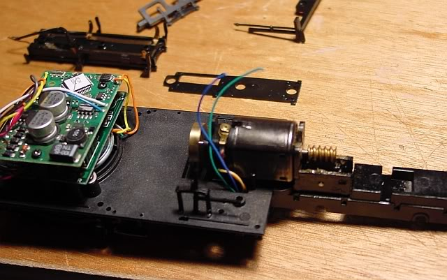
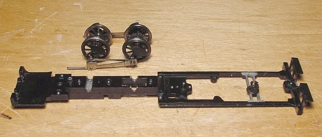

Page 2.
Deconstructing
the Forney.
January
25, 2008.
Lets take it apart
and see how things look..
Homemade styrene
stand..makes things much easier!

I really hate
to cut wires! I try to cut as few as possible..electronics is not my strong-suit!
and im always
afraid I wont be able to get it to work again! but I keep track of which
wires
go where, I've
done it before..shouldnt be a problem! I hope..
I also take these
"deconstructing" photos for my own reference!
so I can remember
what things look like when its time to put the loco back together! 
(I have quite
a few more than what I have posted here)
Bachmann also
has a nice big "exploded diagram" of the forney on-line,
you can find
it here.
speaking of "exploded"..

Well..this is
still going to be difficult, but much easier than Number
23!
(which I have
put on hold for awhile..just becase I feel like working on No. 9 instead
right now..
I want to finish
a project before spring, and I think I can with No.9 but not with No.23)
Two major areas
of concern..the frame and the drivers.
The frame is
about 2mm too wide! urrrrr...
just needs a
tiny bit shaved off each side.
(Dear Bachmann..in
the future could you please please make the frames narrow enough
for those
of us in On2?
please? thank you..) 
Looks like enough
can be removed from the frames without compromising the frame axel cut-outs.
the question
is.. how?
the only model-making
powertools I have are a dremel tool, a drill press, and a mini power saw.
Im not equipped
for lathing or milling..
I think I will
simply take a dremel grinding bit to it!
its not elegant,
but it should work..
and I can still
use the axle notches..that will keep the axles aligned.
all I need to
do to the frame is create enough clearance..and I dont need much.
The drivers will
be the biggest problem..how to regauge them?
Here is a look
at what needs to be done:
(im not sure about
that gear placement yet..where the gear needs to be on the axle
when the regauging
is complete..need to look into that.)
On30 track gauge
is 16.5 mm
On2 track gauge
is 12.7 mm.
thats a difference
of 3.8 mm.
The smallest unit
of measurement I deal with is half a millimeter!
I dont divide
things any smaller than that..
So to regauge
from On30 to On2, wheels need to moved inward by 4mm.
thats the magic
number.
There are two
methods of regauging.
A.
cut the axle
and insert the ends into a new brass tube.
I did that sucessfully
with the
29n2 scale forney.
But that loco
is so much larger than these teeny tiny On30
locos!
(man..im
glad im not doing HOn2!)
the wheelset
without the gear wouldnt be a big deal..
but the wheelset
with the gear would end up with only a 4mm bit of tubing..
thats really
tiny. (im thinking of leaving the gear on its original axle, and only
cutting the axle
to the "right" of the gear)
4mm is very
small..it would have to be a really tight
fit inside the new brass tube,
otherwise thats
going to be a wobbly wheelset.
B.
the other, much
better option is to simply use new axles! new machined axles of the proper
length.
the problem with
that idea is I have no way to make such axels myself..I dont have a lathe,
and I dont know
anyone locally who does.
A few guys on
the On2 forum have talked about the possibiity of machining axles and selling
them!
Which would be
great!
I started to attempt
"method A"..cutting the axels and using brass tubing.
but I couldnt
cut the axle!
my jewelers saw
barely made a dent in the hard steel..this might not be the best way to
go afterall.
So instead I emailed
John
Rogers, of Rogers Model Locomotive Works, who created the
first
reported On2 forney conversion, and asked him if he would be willing
to take on a Forney axle job..
He agreed! (thanks
John!) so I popped them in the mail.
John says: "Rogers
Model Locomotive Works will convert forney axels, do machining or a full
conversion.
I made the
jigs for my own models and this is my way of sharing them. I can
also supply new bottom plates
made from
PC board with new electrical pick ups."
I only had John
do the axels this time, and not the frame.. the price is very reasonable
IMO..
perhaps for future
conversions I will have him do the whole thing! because now I still have
to
grind down the
frame myself! I will attempt that when the drivers come back.
While the axels
are underway, I started work on the cab.
 To
Page 3, the new cab. To
Page 3, the new cab.
 Back
to Page 1 of SR&RL No.9 Back
to Page 1 of SR&RL No.9
Back
to my main page.
|